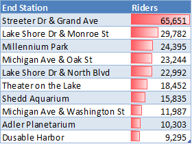

Cyclistic Analysis (R)
This is a case study for a fictional bike-share company in Chicago, Cyclistic, to determine the differences between riders to better explore potential business opportunities. The key focus in this analysis is to find how annual members and casual riders differ. The main reason for this analysis is due to the annual members being more profitable, and identifying differences and trends can help maximize annual membership, resulting in a benefit to the company.
I am using 12 month of data, cleaning, and analysing with R to find these opportunities.
This data is from June 1st, 2021 to May 31st, 2022 and is made available by the real company in Chicago, Divy, through the Google Data Analytics Certificate.
Summary
Through my analysis I was able to answer a few key questions:
- Where are the best spots to find casual riders?
-
The top 10 locations casual riders frequently end at are tourist locations, with Streeter Dr & Grand Ave being significantly frequented more than the others.
- What times are casual riders most active?
-
The highest amount of riders is in the summer, with August being the best month.
The weekends are the best time of the week, with Saturday and Sunday being the highest. - How long do casual riders ride for?
-
Casual riders ride 3.95 times more on average than members. (56 minutes vs 14 minutes)
Recommendations
- Have marketing campaigns targeted on weekends of the summer months
-
Casual riders ride the most during the summer and weekend. This targeted approach would have a larger amount of casual rider seeing it, helping improve the efficiency of any marketing budget.
- Explore incentives for longer rides
-
Causal riders have longer rides. Having discounts or other special promotions for longer rides could be a key factor in obtain new membership.
- Target tourist locations for marketing
-
Tourist locations were found to be frequented the most. Marketing around these locations would have a higher chance of casual riders seeing in.
Analysis
While this graph shows that members are a higher average of our customers, the main difference between the two is that casual riders are almost twice as likely to be riding on the weekends vs the weekdays.
For both members and casual riders, August is the busiest month of the year. This shows that the seasons are a significant factor in the popularity of ridership.
The main focus of this graph is the difference between how long members and causal riders ride for. Casual riders have a significantly longer ride time 3.59 times higher than members (56 minutes vs 14 minutes).
The top 10 stations that riders end at, which has Streeter Dr & Grand Ave being the most frequent place to riders to end up at.